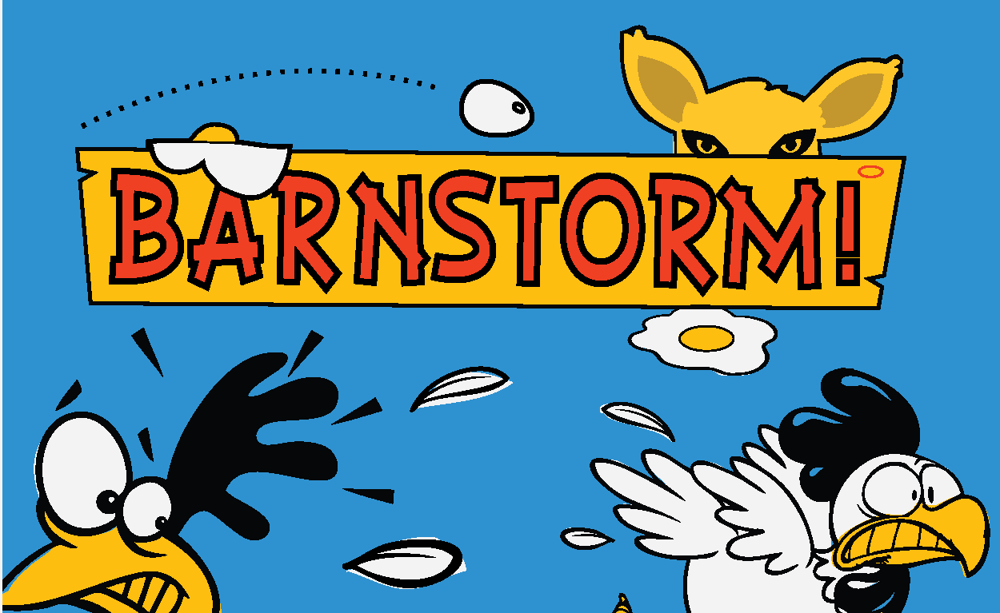

BARNSTORM GAME NODE
Developed as the Capstone project for Thinkful's Node Js course Barnstorm is the result of a combination of several JavaScript frameworks. A co-op browser based multiplayer arcade game the app utilizes socket.io for real-time interaction between players, mongoose for storing data and create.js for client side graphics. Games can be played both in single player or with a friend.